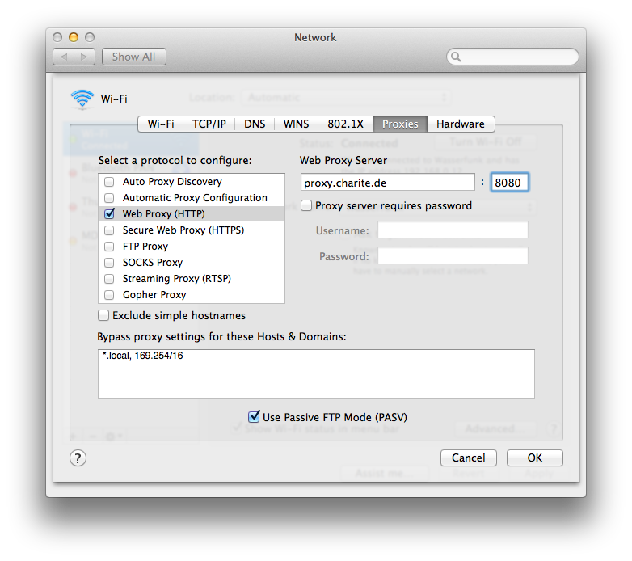
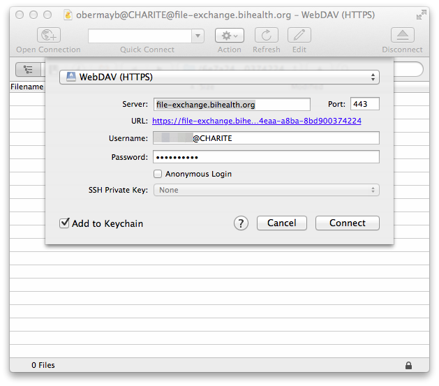

How-To: Use File Exchange¶
Obtaining File Boxes
At the moment, file boxes are only available to members of core facilities (e.g., genomics, bioinformatics, or metabolomics) for exchanging files for their collaboration partners. Currently, HPC users cannot use the file box mechanism on their own.
BIH HPC IT provides a file exchange server to be used by the BIH core facilities and their users.
The server is located in the BIH DMZ in Buch.
Users authenticate using their Charite/BIH (user@CHARITE) or MDC accounts (user@MDC-BERLIN).
File exchange is organized using "file boxes", directories created on the server to which selected users are granted access.
Access control list maintenance is done with audit-trails ("Revisionssicherheit") and the file access itself is also logged to comply with data protection standards.
Access from Charite Network
Access from the Charite network (IP ranges 141.x.x.x and 10.x.x.x) must connect through the Charite proxy (http://proxy.charite.de:8080).
Depending on the client software that you are using, you might have to configure the proxy.
File Box Management¶
File boxes are created by the core facilities (e.g., the genomics facilities at Charite and MDC). The facility members also organize the access control. Please talk to your core facility contact on file exchange.
External users must obtain a Charite or MDC account first. Account creation is handled by the core facilities that the external user is a customer of.
File Access¶
Generally, you will be given a URL to your file box similar to https://file-exchange.bihealth.org/<file-box-id>/.
The files are served over an encrypted connection using WebDAV (which uses HTTPS).
The following describes how to access the files in the box from different platforms.
From Linux¶
We describe how to access the files on the command line using the lftp program.
The program is preinstalled on the BIH (and the MDC cluster) and you should be able to just install it with yum install lftp on CentOS/Red Hat or apt-get install lftp on Ubuntu/Debian.
When using lftp, you have to add some configuration first:
# cat >>~/.lftprc <<"EOF"
set ssl:verify-certificate no
set ftp:ssl-force yes
EOF
In case that you want to access the files using a graphical user interface, search Google for "WebDAV" and your operating system or desktop environment. File browsers such as Nautilus and Thunar have built-in WebDAV support.
Connecting¶
First, log into the machine that has lftp installed.
The login nodes of the BIH cluster do not have it installed but all compute and file transfer nodes have it.
Go to the data download location.
host:~$ mkdir -p ~/scratch/download_dir
host:~$ cd ~/scratch/download_dir
Next, start lftp.
You can open the connection using open -u <user>@<DOMAIN> https://file-exchange.bihealth.org/<file-box-id>/ (NB: there is a trailing slash) where
<user>is your user name, e.g.,holtgrem,<domain>is eitherMDC-BERLINorCHARITE, and<file-box-id>the file box ID from the URL provided to you.
When prompted, use your normal Charite/MDC password to login.
host:download_dir$ lftp
lftp :~> open -u holtgrem@CHARITE https://file-exchange.bihealth.org/c62910b3-c1ba-49a5-81a6-a68f1f15aef6
Password:
cd ok, cwd=/c62910b3-c1ba-49a5-81a6-a68f1f15aef6
lftp holtgrem@CHARITE@file-exchange.bihealth.org:/c62910b3-c1ba-49a5-81a6-a68f1f15aef6>
Browsing Data¶
You can find a full reference of lftp on the lftp man page.
You could also use help COMMAND on the lftp prompt.
For example, to look at the files of the server for a bit...
lftp holtgrem@CHARITE@file-exchange.bihealth.org:/c62910b3-c1ba-49a5-81a6-a68f1f15aef6> ls
drwxr-xr-x -- /
drwxr-xr-x -- dir
-rw-r--r-- -- file1
lftp holtgrem@CHARITE@file-exchange.bihealth.org:/c62910b3-c1ba-49a5-81a6-a68f1f15aef6> find
./
./dir/
./dir/file2
./file1
Downloading Data¶
To download all data use mirror, e.g. with -P 4 to use four download threads.
lftp holtgrem@CHARITE@file-exchange.bihealth.org:/c62910b3-c1ba-49a5-81a6-a68f1f15aef6> mirror .
Total: 2 directories, 3 files, 0 symlinks
New: 3 files, 0 symlinks
lftp holtgrem@CHARITE@file-exchange.bihealth.org:/c62910b3-c1ba-49a5-81a6-a68f1f15aef6> exit
host:download_dir$ tree
.
├── dir
│ └── file2
├── file1
└── file.txt
1 directory, 3 files
Ignoring gnutls_record_recv errors.
A common error to see is mirror: Fatal error: gnutls_record_recv: The TLS connection was non-properly terminated..
You can just ignore this.
Uploading Data¶
To upload data, you can use mirror -R . which is essentially the "reverse" of the mirror command.
lftp holtgrem@CHARITE@file-exchange.bihealth.org:/c62910b3-c1ba-49a5-81a6-a68f1f15aef6> mirror -R
mirror: Fatal error: gnutls_record_recv: The TLS connection was non-properly terminated.
mirror: Fatal error: gnutls_record_recv: The TLS connection was non-properly terminated.
mirror: Fatal error: gnutls_record_recv: The TLS connection was non-properly terminated.
Total: 2 directories, 3 files, 0 symlinks
Modified: 3 files, 0 symlinks
4 errors detected
From Windows¶
We recommend to use WinSCP for file transfer.
- Pre-packaged WinSCP on Charite Workstations. Charite IT has packaged WinSCP and you can install it using Matrix24 Empirum on Windows 10 using these instructions in the Charite intranet.
- Installing WinSCP yourself. You can obtain it from the WinSCP Download Page. A "portable" version is available that comes as a ZIP archive that you just have to extract without an installer.
Connecting¶
After starting WinSCP, you will see a window titled Login.
Just paste the URL (e.g., https://file-exchange.bihealth.org/c62910b3-c1ba-49a5-81a6-a68f1f15aef6/) of the file box into the Host name entry field.
In this case, the fields File protocol etc. will be filled automatically.
Next, enter your user name as user@CHARITE or user@MDC-BERLIN (the capitalization of the part behind the @ is important).
The window should now look similar to the one below.

Proxy Configuration on Charite Network
If you are on the Charite network then you have to configure the proxy. Otherwise, you have to skip this step.
Click Advanced and a window titled Advanced Site Settings will pop up.
Here, select Connection / Proxy in the left side.
Select HTTP for the Proxy type.
Then, enter proxy.charite.de as the Proxy host name and set the Port number to 8080.
The window should nwo look as below.
Then, click OK to apply the proxy settings.

Finally, click Login.
You can now transfer files between the file exchange server and your local computer using drag and drop between WinSCP and your local Windows File Explorer.
Alternatively, you can use the two-panel view of WinSCP to transfer files as described here.
From Mac¶
For Mac, we you can also use lftp as described above in From Linux.
You can find install instructions here online.
Proxy Configuration on Charite Network
If you are on the Charite network then you must have configured the proxy appropriately. Otherwise, you have to skip this step.
You can find them in your System Preference in the Network section, in the Advanced tab of your network (e.g., WiFi).

If you want to use a graphical interface then we recommend the usage of Cyberduck.
After starting the program, click Open Connection on the top left, then select WebDAV (HTTPS) and fill out the form as in the following way.
Paste the file box URL into the server field and use your login name (user@CHARITE or user@MDC-BERLIN) with your usual password.

If you need to perform access through a graphical user interface on your Mac, please contact hpc-helpdesk@bihealth.org for support.
Security¶
The file exchange server has the fail2ban software installed and configured (Charite, MDC, and BIH IPs are excluded from this).
If you are entering your user/password incorrectly for more than 5 times in 10 minutes then your machine will be banned for one hour. This means someone else that has the same IP address from the side of the file exchange server can get you blocked. This can happen if you are in the same home or university network with NAT or if you are behind a proxy. In this case you get a "connection refused" error. In this case, try again in one hour.